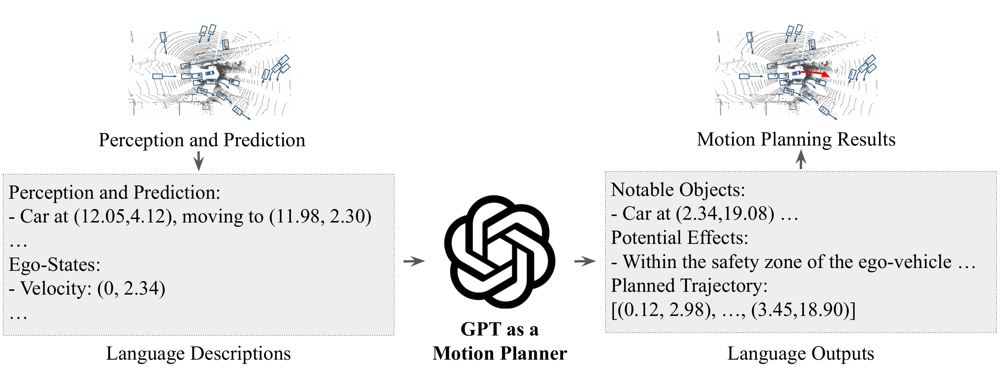
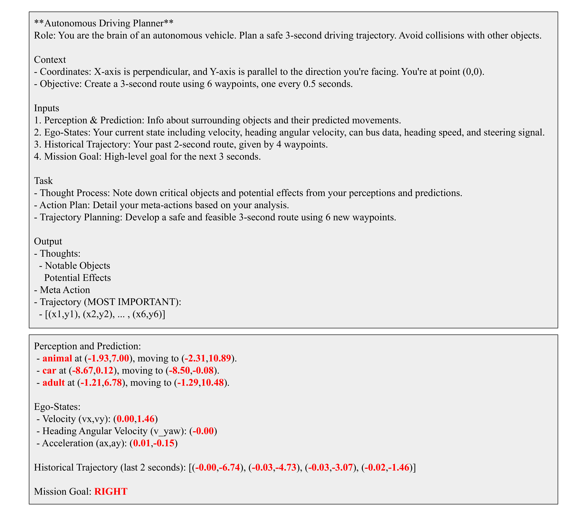
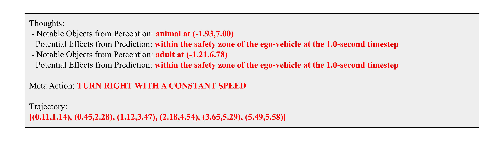
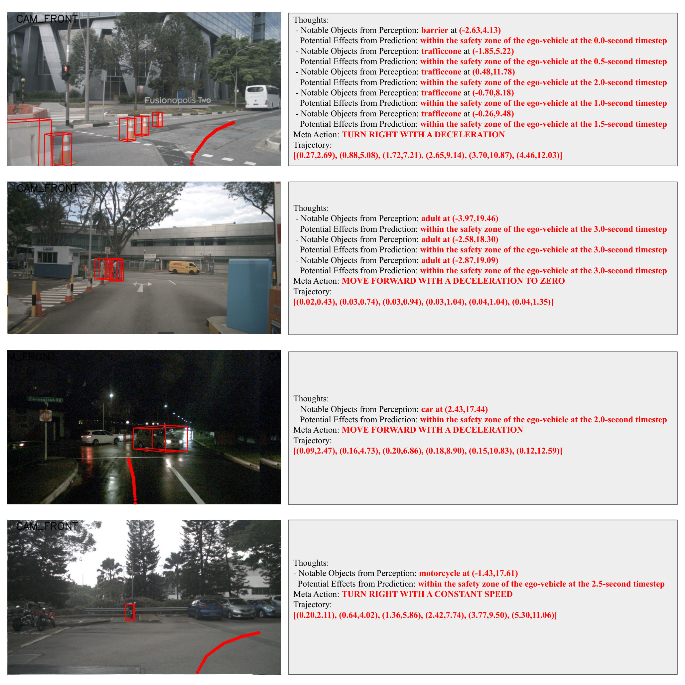

0. 页面头部：论文身份卡片
| 论文 | GPT-Driver: Learning to Drive with GPT |
|---|---|
| 作者 | Mao, Jiageng；Qian, Yuxi；Ye, Junjie；Zhao, Hang；Wang, Yue |
| 时间 | 2023/10/02 |
| 方向 | LLM motion planner / text trajectory |
| 核心贡献 | GPT-Driver 把自动驾驶 motion planning 重写为语言建模问题，将感知/预测/ego state 组织成 prompt，让 GPT-3.5 输出 CoT 决策过程和数值 waypoint 轨迹。 |
| 模型类型 | 将自动驾驶运动规划重写为语言建模：把结构化感知与 ego 状态转成 prompt，让 GPT 输出推理文本与数值轨迹。 |
| 输入 | 检测/跟踪后的结构化对象、地图/车道信息、ego 状态与历史轨迹文本；图像不直接进入模型。 |
| 中间表示 | prompt 中的场景描述进入 GPT，Chain-of-Thought 表达关键对象、风险与驾驶决策。 |
| 输出 | 自然语言推理和文本格式的未来 waypoint，解析后恢复为数值轨迹。 |
| 训练目标 | 以专家轨迹和人工/自动生成的推理监督做自回归语言建模，并使用轨迹误差评估。 |
| 代码与复现状态 | 是，评测代码公开；运行需要 OpenAI API；中高：适合作为“轨迹语言化”早期基线 |
1. 论文速览：用一页讲清楚价值
1.1 一句话贡献
GPT-Driver 把自动驾驶 motion planning 重写为语言建模问题，将感知/预测/ego state 组织成 prompt，让 GPT-3.5 输出 CoT 决策过程和数值 waypoint 轨迹。
1.2 论文专属关键词
GPT-3.5、motion planning as language modeling、chain-of-thought、waypoint text、prompting-reasoning-finetuning、nuScenes、few-shot planning
1.3 技术定位
将自动驾驶运动规划重写为语言建模：把结构化感知与 ego 状态转成 prompt，让 GPT 输出推理文本与数值轨迹。
1.4 论文构建了什么
| 输入 | 检测/跟踪后的结构化对象、地图/车道信息、ego 状态与历史轨迹文本；图像不直接进入模型。 |
|---|---|
| 编码与融合 | prompt 中的场景描述进入 GPT，Chain-of-Thought 表达关键对象、风险与驾驶决策。 |
| 输出 | 自然语言推理和文本格式的未来 waypoint，解析后恢复为数值轨迹。 |
| 训练目标 | 以专家轨迹和人工/自动生成的推理监督做自回归语言建模，并使用轨迹误差评估。 |
1.5 核心结论与证据链
GPT-Driver 的贡献非常直接：把 planner 的输入输出都语言化。输入 prompt 包含通用驾驶上下文、检测/预测对象、ego state；输出包含自然语言推理和未来 waypoint 坐标，再解析回数值轨迹。论文提出 prompting-reasoning-finetuning 三步，让 GPT 不只写解释，还能输出精确坐标。few-shot 实验中，GPT-Driver fine-tuning 在 Table 2 达到 Avg. L2=0.84m、Avg. Collision=0.44%，明显优于 in-context learning 的 3.17m/5.30%。
核心证据来自：规划 L2 与碰撞指标、CoT 与 prompt 设计消融，以及模型输出文本与轨迹的可视化。。证据边界是：可读 CoT 不是因果解释；上游感知错误、文本量化和闭环误差没有被完整评估。
2. 研究问题与动机：为什么需要这篇论文
2.1 核心问题与成功标准
学习型 planner 常在训练分布外场景退化，且黑盒轨迹缺少解释。LLM 具备语言推理和少样本泛化，能否通过文本界面承担运动规划？GPT-Driver 的假设是：只要把结构化感知和轨迹坐标以合适 token 表示，GPT 的自回归建模能力可以学习驾驶轨迹分布，并通过 CoT 暴露关键对象和决策依据。
2.2 现有方法的具体不足
该论文针对的瓶颈不是笼统的“泛化不足”，而是：直接图像 VLM 训练成本高且几何 grounding 不稳定；结构化文本能利用 LLM 推理，但信息受上游检测器限制。
2.3 为什么不走显而易见的替代路线
直接图像 VLM 训练成本高且几何 grounding 不稳定；结构化文本能利用 LLM 推理，但信息受上游检测器限制。
3. 相关工作脉络：这篇论文从哪里来
3.1 技术家族与直接前作
它连接传统 motion planning、LLM prompting/CoT、自动驾驶语言化表示。相对 Agent-Driver，GPT-Driver 不做多轮工具调用和记忆检索，而是把一个规划问题封装成 prompt-to-trajectory。相对 EMMA/OpenDriveVLA，它没有直接处理原始多视角图像，更多依赖外部 perception/prediction 模块生成文本。
3.2 本文新意属于表示、架构、训练还是评估
从技术地图看，本文的主要新意可概括为：将自动驾驶运动规划重写为语言建模：把结构化感知与 ego 状态转成 prompt，让 GPT 输出推理文本与数值轨迹。。它并非简单替换 backbone，而是围绕输入表示、中间信息流或评价方式重新定义了论文的核心问题。
4. 方法总览图：先看完整信息流
4.1 主框架图与机制

4.2 信息流一句话串联
输入：检测/跟踪后的结构化对象、地图/车道信息、ego 状态与历史轨迹文本；图像不直接进入模型。；中间处理：prompt 中的场景描述进入 GPT，Chain-of-Thought 表达关键对象、风险与驾驶决策。；最终输出：自然语言推理和文本格式的未来 waypoint，解析后恢复为数值轨迹。；训练约束：以专家轨迹和人工/自动生成的推理监督做自回归语言建模，并使用轨迹误差评估。
5. 方法详解：输入、表示、融合、解码、训练与部署
5.1 输入表示
检测/跟踪后的结构化对象、地图/车道信息、ego 状态与历史轨迹文本；图像不直接进入模型。。复现时首先要确保各模态的时间同步、坐标系、可见范围与训练时一致；任何一个上游输入偏移都可能被后续大模型放大。
5.2 编码器与融合设计
prompt 中的场景描述进入 GPT，Chain-of-Thought 表达关键对象、风险与驾驶决策。
5.3 中间表示为何重要
中间表示决定模型保留何种几何、语义和时间信息。该论文的关键中间链路是：prompt 中的场景描述进入 GPT，Chain-of-Thought 表达关键对象、风险与驾驶决策。。它让最终输出能够利用这些信息，但也把上游表示误差带入规划或预测。
5.4 解码、动作生成或未来预测
自然语言推理和文本格式的未来 waypoint，解析后恢复为数值轨迹。
5.5 训练目标及副作用
以专家轨迹和人工/自动生成的推理监督做自回归语言建模，并使用轨迹误差评估。。这些目标直接约束对应监督输出，却不会自动保证真实闭环安全、跨域鲁棒性或因果可解释性。
5.6 训练阶段与数据风险
流程分三步。Prompting：把 perception/prediction 结果、ego velocity、历史轨迹等写成自然语言和坐标列表。Reasoning：要求模型先列出 notable objects、potential effects 和 high-level action，再给出 planned trajectory。Fine-tuning：用 nuScenes 人类驾驶轨迹和自动生成/标注的 reasoning guidance 调 GPT-3.5 fine-tuning API，使输出格式稳定。推理后用 parser 提取坐标，计算 L2 和 collision。
5.7 推理与部署流程
离线 nuScenes 运动规划；依赖外部感知与文本模板，未直接进行实时闭环控制。
6. 原论文图解：逐图拆解证据含义
7.1 Figure 1：Overview of GPT-Driver. We reformulate motion planning as a
7.2 Figure 2：An example of input prompts provided to the LLM. The upper t

7.3 Figure 3：An example of the expected outputs of the LLM. The chain-of-

7.4 Figure 4：Visualization of the GPT-Driver's outputs (text boxes on the

7. 实验与结果：把证据链拆开
7.1 数据集、任务与划分
实验围绕该论文的技术定位组织：将自动驾驶运动规划重写为语言建模：把结构化感知与 ego 状态转成 prompt，让 GPT 输出推理文本与数值轨迹。。需要特别区分离线预测、生成质量、开环规划与真实/仿真闭环，因为它们使用不同成功标准；本论文主要证据为：规划 L2 与碰撞指标、CoT 与 prompt 设计消融，以及模型输出文本与轨迹的可视化。
7.2 Baseline 为什么重要
论文的比较应围绕其技术定位理解：将自动驾驶运动规划重写为语言建模：把结构化感知与 ego 状态转成 prompt，让 GPT 输出推理文本与数值轨迹。。强 baseline 用来判断收益来自新增信息流、模型容量还是评估协议；仅与较弱旧方法比较不足以证明论文主张。
7.3 指标如何对应论文主张
本文实验所依赖的证据为：规划 L2 与碰撞指标、CoT 与 prompt 设计消融，以及模型输出文本与轨迹的可视化。。离线预测误差、生成质量、规划指标或闭环分数各自只衡量部分能力，不能互相替代。
7.4 主结果与机制是否一致
实验在 nuScenes open-loop planning。few-shot 设置显示 fine-tuning 比 in-context learning 稳定得多：Table 2 中 fine-tuning Avg. L2=0.84、Avg. Collision=0.44；in-context Avg. L2=3.17、Collision=5.30。论文还展示生成的 CoT 能识别关键对象并解释减速/避让。证据缺口在于输入来自外部感知预测，模型没有直接学习图像；同时 GPT API 版本和随机性会影响复现。
8. 消融、失败案例与证据缺口
8.1 消融实验应回答什么
最关键的消融需要隔离该论文的核心信息流：规划 L2 与碰撞指标、CoT 与 prompt 设计消融，以及模型输出文本与轨迹的可视化。。如果去掉核心模块后只在部分指标下降，需要进一步判断收益是否集中于特定场景。
8.2 失败案例与证据缺口
可读 CoT 不是因果解释；上游感知错误、文本量化和闭环误差没有被完整评估。
8.3 论文没有证明什么
现有结果不能直接推出：可读 CoT 不是因果解释；上游感知错误、文本量化和闭环误差没有被完整评估。
9. 复现要点：真正动手会遇到什么
9.1 最小可行复现路线
复现需要 nuScenes、预缓存 perception/prediction/ego state、OpenAI API、fine-tuning 数据生成脚本和评测脚本。最小路径是先跑官方 evaluation code，复现 open-loop L2/collision；再用 10% 训练数据跑 fine-tuning。阻塞点是 API 成本、模型版本漂移、输出坐标解析失败和 prompt 格式不稳定。验收标准是 fine-tuning 明显优于 in-context learning，并能输出可解析 trajectory。
9.2 数据、模型、硬件与阻塞点
数据与接口重点：检测/跟踪后的结构化对象、地图/车道信息、ego 状态与历史轨迹文本；图像不直接进入模型。。模型重点：prompt 中的场景描述进入 GPT，Chain-of-Thought 表达关键对象、风险与驾驶决策。。部署重点：离线 nuScenes 运动规划；依赖外部感知与文本模板，未直接进行实时闭环控制。。论文未明确披露的硬件与训练成本不在此推测。
9.3 验收标准
复现成功不应只以脚本运行结束为标准，而应至少复现论文核心趋势：规划 L2 与碰撞指标、CoT 与 prompt 设计消融，以及模型输出文本与轨迹的可视化。；同时检查输出是否在论文声称的边界外快速退化。
10. 分析、局限与边界：作者没说完的部分
10.1 最有价值贡献
GPT-Driver 价值在于证明“轨迹坐标可作为语言 token 被 LLM 学习”，为 EMMA/OpenDriveVLA 的文本化轨迹输出铺路。它的边界也明显：没有视觉端到端，没有闭环反馈，安全依赖外部模块和 parser。改进可从开源 LLM、本地微调、轨迹 token 离散化和 safety verifier 入手。
10.2 主张—证据—充分性
| 论文主张 | 将自动驾驶运动规划重写为语言建模：把结构化感知与 ego 状态转成 prompt，让 GPT 输出推理文本与数值轨迹。 |
|---|---|
| 支撑证据 | 规划 L2 与碰撞指标、CoT 与 prompt 设计消融，以及模型输出文本与轨迹的可视化。 |
| 充分性判断 | 对论文评测范围内的机制结论较有支持；对真实闭环、跨域或安全泛化仍不足。 |
| 原因 | 可读 CoT 不是因果解释；上游感知错误、文本量化和闭环误差没有被完整评估。 |
10.3 可行改进方向
干预 CoT 验证因果性；让模型输出候选轨迹与不确定性；用闭环世界模型检验轨迹后果。
10.4 后续实验建议
| 核心模块去除/替换 | 隔离论文主张，观察核心指标是否按预期下降 |
|---|---|
| 跨域或扰动测试 | 检查方法是否依赖训练分布和干净输入 |
| 闭环 rollout | 观察误差累积、碰撞与恢复 |
| 不确定性/安全验证 | 识别高风险预测并建立 fallback |
11. 组会问答准备
Q: 为什么 fine-tuning 比 ICL 好？
A: 因为坐标输出格式和数值精度需要稳定学习，仅靠 few-shot prompt 难以保证可解析和可驾驶。
Q: CoT 会直接提升安全么？
A: CoT 提升解释和可能的推理一致性，但不能自动保证轨迹安全，仍需 collision 检查。
Q: 输入依赖什么？
A: 依赖外部 perception/prediction 模块输出对象、位置和未来轨迹文本。
Q: 与 Agent-Driver 的区别？
A: GPT-Driver 是单次 prompt-to-trajectory planner；Agent-Driver 是多轮工具调用+记忆+反思的 agent 系统。
Q: 最大复现风险？
A: OpenAI API 模型版本变化和输出解析不稳定。
12. 我的阅读笔记：转成自己的研究素材
12.1 最值得借鉴的点
作为“LLM 轨迹语言化”基线非常适合引用。做新工作时可以把 GPT-Driver 的 prompt/CoT 设计替换为开源 VLA action tokens，并加入闭环/世界模型验证。
12.2 与同目录论文的比较钩子
可从“语言是否直接影响动作、是否显式预测未来世界、是否真实闭环、是否保留 3D 几何、是否使用 agent/tool/memory”五条轴与同目录论文比较。本文的定位为：将自动驾驶运动规划重写为语言建模：把结构化感知与 ego 状态转成 prompt，让 GPT 输出推理文本与数值轨迹。
12.3 可行动创新点
干预 CoT 验证因果性；让模型输出候选轨迹与不确定性；用闭环世界模型检验轨迹后果。
13. 附录图解与证据索引
本文使用的原始图件均来自 arXiv 源码，图注保留或准确转述。其他附录图未被机械堆入页面；只有能够解释方法、结果、消融或失败的图件才被选择。